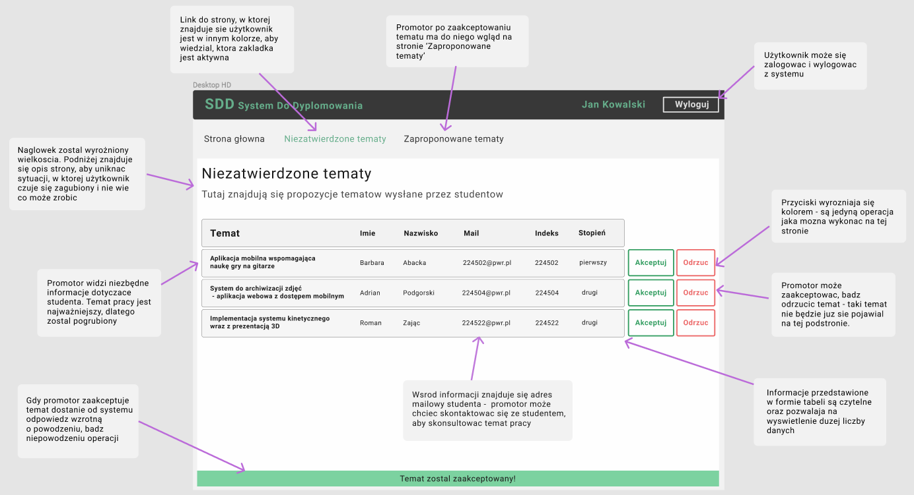
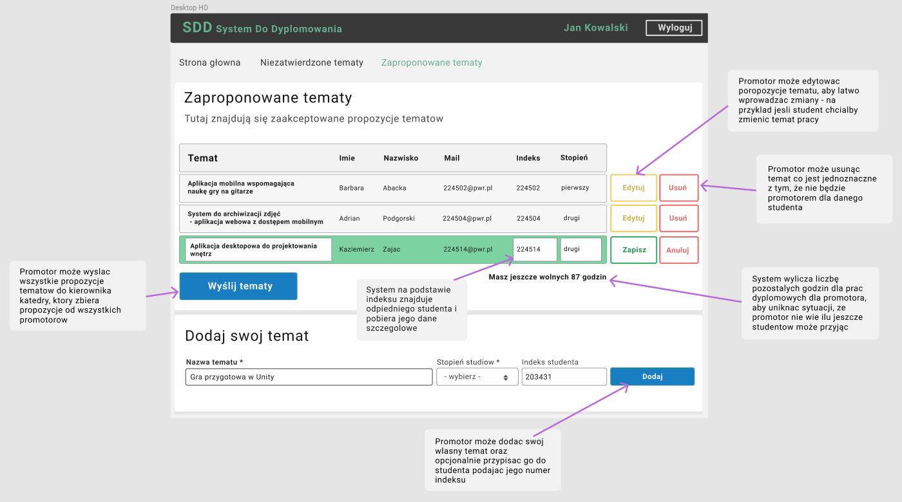

System Do Dyplomowania
SDD
WIZJA SYSTEMU
Moim zadaniem było zaprojektowanie systemu, który zautomatyzowałby wszystkie czynności w procesie dypomowania, które były wcześniej wykonywane ręcznie.
- Zebrałam informacje dotyczące całego procesu dyplomowania na uczelni
- Odkryłam problemy wynikające z obecnego systemu
- Zebrałam wymagania użytkowników
- Spisałam pomysły rozwiązań problemów
- Opisałam przyszłe cechy elektronicznego systemu wynikające z potrzeb użytkowników, które rozwiazałyby problemy w obecnym systemie
Analiza obecnego rozwiązania oraz rozmowy z przyszłymi użytkownikami pozwoliły odkryć problemy - dzięki zebranym informacjom zaproponowałam rozwiązanie w projektowanym systemie:
PROBLEM: Znalezienie wolnego tematu.
ROZWIĄZANIE: Dostępna wiedza z listą wolnych tematów.
PROBLEM: Informacja o zmianie tematów.
ROZWIĄZANIE: Dostępna akutalna wiedza, który student realizuje jaki temat.
PROBLEM: Brak informacji o tym, czy promotor osiąga limit dyplomantów.
ROZWIĄZANIE: Dostępna informacja o liczbie wolnych godzin/dyplomantów. Powiadomienie o osiągnięciu limitu.
PROBLEM: Wybór recenzenta.
ROZWIĄZANIE: Dostępna wiedza o tym ile recenzent ma przypisanych prac, wiedza o stopniach naukowych recenzentów.
SPECYFIKACJA WYMAGAŃ
Posiadając wymagania użytkowników mogłam zdefiniować je w formie historyjek oraz diagramu przypadków użycia.

Następnie zdefiniowałam diagram domenowy, który wstępnie przedstawi strukturę klas w tworzonym systemie.

SPECYFIKACJA PRZYPADKÓW UŻYCIA
Poprzez obszerność projektowanego systemu zdecydowałam się zautomatyzować procesy, które zwiazane są z propozycjami tematów
- Zatwierdzanie propozycji tematów
- Zarządzanie zaakceptowanymi propozycjami tematów
Użytkownikiem zaprojektowanej części systemu będzie promotor.
Dla wybranych przypadków użycia napisałam scenariusze korzystania z systemu wraz z wątkami alternatywnymi.
W kolejnym kroku zbudowałam diagram klas.

PROTOTYP INTERFEJSU
 Po zbudowaniu interfejsów dodałam interakcję i przechodzenie między widokami.